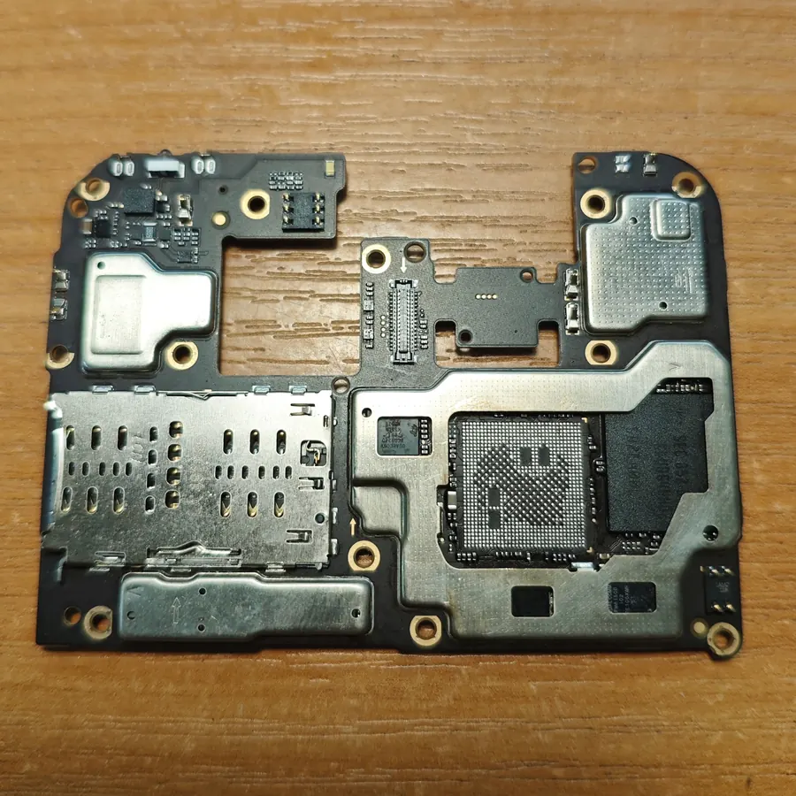
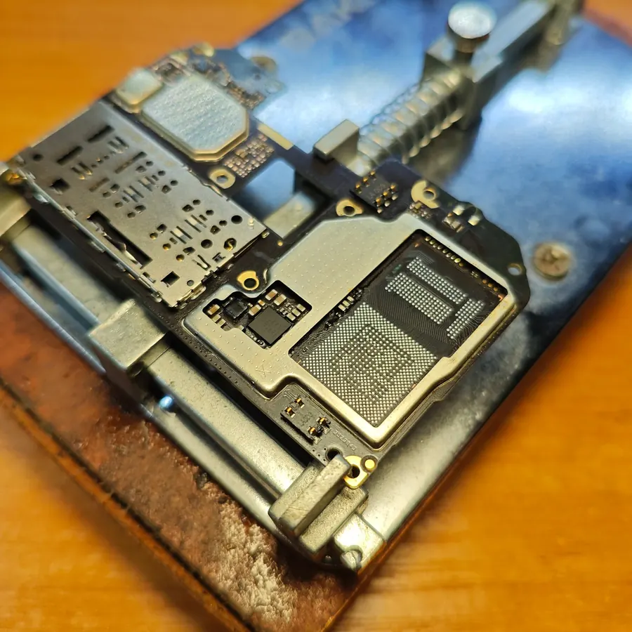

Ремонт Xiaomi, Redmi и POCO в Мариуполе
Меняем экраны, аккумуляторы и разъёмы на Xiaomi, Redmi и POCO, перепрошиваем и ремонтируем платы. Диагностика бесплатная, аккумулятор и разъём — в день обращения. Мастерская в ТЦ «Гудзон», ежедневно с 10:00 до 21:00.
Что чиним на Xiaomi
| Работа | Срок | Гарантия |
|---|---|---|
| Замена дисплея IPS или AMOLED | 1–2 дня при наличии | 2–3 недели |
| Замена аккумулятора | в тот же день | 1 месяц |
| Замена разъёма Type-C | в тот же день | — |
| Замена стекла камеры | 20–40 минут | — |
| Замена задней крышки | 1–2 дня при наличии | — |
| Прошивка, сброс пароля и Mi/Google-аккаунта | 1–4 дня | — |
| Ремонт платы, reball | 3–7 дней | — |
| Восстановление после воды | 1–3 дня | без гарантии |
Цену называем после бесплатной диагностики: она зависит от модели и от того, какая запчасть есть в наличии. Пришлите модель в Telegram — сориентируем сразу.
Экран и батарея
В линейках Xiaomi, Redmi и POCO встречаются и IPS-, и AMOLED-экраны, поэтому модель дисплея подбираем точно под ваш телефон, после установки проверяем сенсор и датчики. Батареи у Xiaomi ёмкие, но компоновка плотная: при замене важно не повредить шлейфы рядом с аккумулятором. Подробно — в статье про замену аккумулятора.

Разъём Type-C
Если зарядка идёт только под углом, кабель болтается или телефон заряжается медленно, начинаем с чистки разъёма. Если контакты повреждены, меняем нижнюю плату с разъёмом. Как понять, что именно сломалось, — в статье про разъёмы.
Прошивка и плата
Телефон зависает на логотипе, ушёл в бесконечную перезагрузку или после сброса просит аккаунт — перепрошиваем и восстанавливаем доступ. Работаем только с владельцем. Если телефон не включается совсем, проверяем плату: иногда нужен reball — перепайка процессора или памяти. Это 3–7 дней.

Как проходит ремонт
- Звоните или пишете в Telegram: модель и что случилось. Сразу говорим, сколько примерно займёт работа.
- Бесплатная диагностика — в мастерской или на месте при выезде. Если ремонт не нужен, ничего не платите.
- Называем точную цену до начала работ. Без доплат по ходу.
- Ремонтируем, проверяем вместе с вами и выдаём гарантию на работу.
Где нас найти
Мастерская: ТЦ «Гудзон», Ленинградский проспект (просп. Победы, 117), рядом с рынком «Солнечный». Ежедневно с 10:00 до 21:00. Можно вызвать мастера: по Левобережному району выезд бесплатный, в другие районы — стоимость по телефону.
Построить маршрут в Яндекс Картах →
Частые вопросы
Сколько стоит ремонт Xiaomi?
Зависит от модели и запчасти. Точную цену называем после бесплатной диагностики, до начала работ.
Сколько ждать?
Аккумулятор и разъём — в день обращения, стекло камеры — 20–40 минут, дисплей — 1–2 дня при наличии, перепайка платы — 3–7 дней.
Сохранятся ли фото и контакты?
При замене экрана, батареи и разъёма данные не трогаем. При перепрошивке данные могут удалиться — предупреждаем заранее и, если телефон включается, переносим их.
Можно вызвать мастера?
Да, по всему Мариуполю. По Левобережному району выезд бесплатный.
Ещё по теме: Замена аккумулятора · Разъём зарядки · Стекло камеры